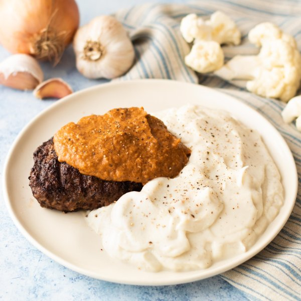

Salisbury Steak with Cauliflower Mash & Tomato-Onion Gravy

Prep Time
35 min
Nutrition (per serving)
647.8 kcalCalories
40.8 gProtein
14.7 gCarbs
47.9 gFat
Full nutrition table
| Calories | 647.8 kcal |
| Total fat | 47.9 g |
| Saturated fat | 22 g |
| Trans fat | 2.2 g |
| Cholesterol | 243.9 mg |
| Sodium | 217.4 mg |
| Carbohydrates | 14.7 g |
| Fiber | 4.5 g |
| Sugars | 5.5 g |
| Protein | 40.8 g |
| Potassium | 1223.1 mg |
| Calcium | 106.2 mg |
| Iron | 5.4 mg |
| Vitamin A | 318.6 IU |
| Vitamin C | 75.3 mg |
| Vitamin D | 36.1 IU |
Cookware
Ingredients
- 1 medium headcauliflower
- 8 fl ozchicken or vegetable broth
- 2eggs
- 1 ½ lblean ground beef
- 2 tbsptomato paste
- 1 mediumyellow onion
- almond meal/flour
- black pepper
- butter, unsalted
- Dijon mustard
- onion powder
- salt
- soy sauce
Steps
- Fill a medium saucepan with about 1-inch of hot water from the tap; cover and place over high heat.
- Wash cauliflower and cut off the leaves; roughly chop into bite-sized pieces.1 medium head cauliflower
- Once the water in the saucepan is boiling, add cauliflower, reduce heat to medium, and cook until tender, about 10 minutes.
- Meanwhile, combine ground beef, eggs, almond meal, and spices in a medium bowl and mix with your hands until well combined.1 ½ lb lean ground beef
2 eggs
2 tbsp almond meal/flour
2 tsp onion powder
½ tsp salt
⅛ tsp black pepper - Form ground beef mixture into 4 equal-sized, approximately 1-inch thick, patties and place on a plate.
- Preheat a large skillet over medium-high heat.
- Once the skillet is hot, add butter and swirl to coat the bottom.2 tbsp butter, unsalted
- Place the patties in the skillet and cook until they are well done, 4-5 minutes per side. Once done, transfer the patties to a clean plate and cover with aluminum foil.
- When the cauliflower is cooked, drain in a colander, transfer to a blender, and add butter, salt, and pepper; purée until smooth. Transfer to a medium bowl, cover with aluminum foil, and set aside. Reserve blender for later use.2 tbsp butter, unsalted
1 tsp salt
½ tsp black pepper - Meanwhile, peel and mince the onion.1 medium yellow onion
- Return the skillet to medium heat. Add butter and onion; cook, stirring occasionally, until golden, about 4 minutes.2 tbsp butter, unsalted
- Add tomato paste, Dijon, soy sauce, and broth to the skillet. Bring to a boil and remove from heat.2 tbsp tomato paste
4 tsp Dijon mustard
4 tsp soy sauce
8 fl oz (1 cup) chicken or vegetable broth - Pour the onion gravy into the blender and process until smooth, about 1 minute.
- To serve, divide cauliflower mash and Salisbury steak between plates. Top with gravy and enjoy!